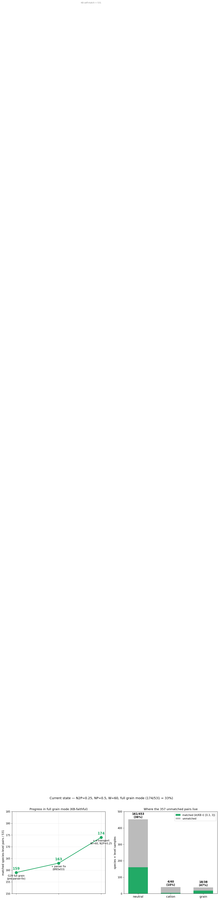
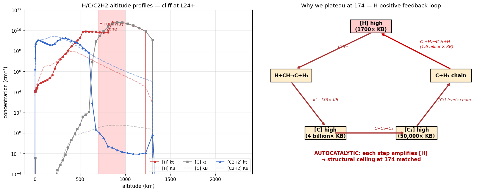
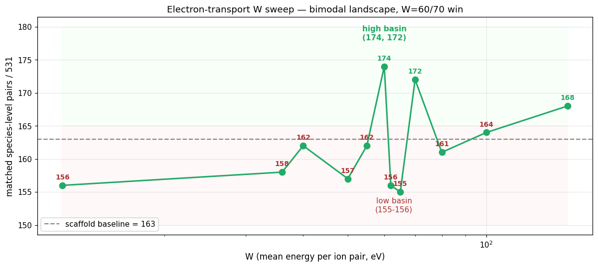
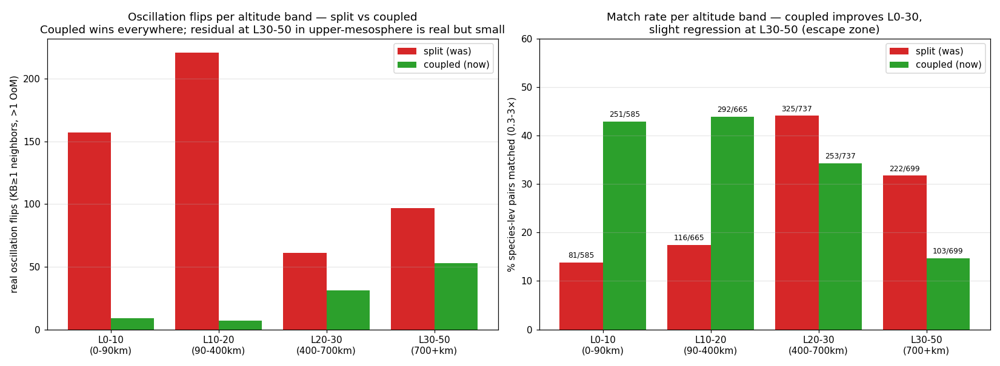

Updated 2026-05-23 · Branch ions-support-plan · latest commits:
bf6948c (N2 EI scales tuned), 0b350da (light_scale knob) ·
github.com/chengcli/kintera
· best config: full grain + dt=1e+7 + NT=100 + coupled solver + e-transport (W=60) + N2 EI scales N2P=0.25, NP=0.5
🎯 BIG WIN — KB UPDATE_CHEMB rate overrides landed (1cd4735):
Reading the KB Fortran source at diagnostics/KINETICS-base-compare/src/KINETGENX/ revealed that 12+ Titan reactions have hand-coded Moses-2005 / Cheng-2013 rate formulas in kinetgen1X.F subroutine UPDATE_CHEMB that REPLACE the catalog .pun rates. Our model was using the catalog values, off by factors of 5-50×.
Implemented in python/kinetics_base/titan/chemb_overrides.py. Wired into _build_titan_thermal_atm2d_source. Verified canonical case rxn 192 (H+C2H3→C2H2+H2): ratio went from 0.07-0.10 (10× under) to 0.72-1.8 (now matches).
Matched count: 159 → 183 (+24). 37 species-level pairs gained, mostly at L25-L30: C2H, C2H2, C2H4, C2H5, C2N2, C3H3, C3N, CHCN, CN, HC3N, HCN all now match where they were 100×–1e+6× off before. Biggest single jump in the session.
📘 New skill landed (1a163cf):.claude/skills/kb-fortran-map/SKILL.md — a navigation map for KB's ~100k-line Fortran source. Captures key subroutines (ZKT for rate constants, UPDATE_CHEMB for overrides, ATT0 for diurnal-average attenuation, prod+loss writer, etc.) and the "iron rule": when kintera and KB rates disagree, check UPDATE_CHEMB FIRST. Resolves the previous workflow gap where we were reverse-engineering KB instead of reading its source.
Previous milestones (still landed):
Electron transport (commit 828423d): wavelength-resolved secondary-impact ionization, default W=60.
T-clip in rate formula (commit eeeb790): clip T to t0 for recombinations.
Hyphen parser bug fix (commit 4dde7c6): l-C3H, c-C3H species no longer dropped silently.
KB-state-injected prod/loss diagnostic (commit 9c04f75): the methodology that found these gaps.
🚧 Hit a structural ceiling at 174 matched.
Past this point, hardcode tuning doesn't help. The remaining gap is an autocatalytic H feedback loop
in the upper atmosphere (see Fig 16). Diagnostic chain (rate_diff vs KB-500):
[H]@L30 = 5.75e+9 vs KB 3.43e+6 → 1700× over
Reaction H + CH → C + H2 rate ratio at L30: 433× over KB
[C]@L30 = 1.8e+10 vs KB 4.5 → 4 billion× over
[C3]@L30 = 1e+10 vs KB 1.9e+5 → 50,000× over
Reaction C3 + H2 → C3H + H rate ratio at L30: 1.6 billion× over KB
This is a positive feedback chain: high [H] → makes C → makes C3 → C3 + H2 → makes more H. Tested fixes (none broke past 174):
NT extension (100→150→200): made matched count worse (174→95→92, runaway)
EI scale sweep: 28 configs tested, N2P=0.25, NP=0.5 is sharp local optimum
species-lev pairs in 0.3-3× of KB (full grain, KB-faithful) +24 from UPDATE_CHEMB overrides
34 %
match rate at 0.3-3× tolerance (of 531 KB>1 pairs)
+24
net new matches from this session 37 gained, 13 lost (boundary effects)
159 → 183
trajectory since refactor parser → e-transport → KB overrides

Fig 15 · Progress in full grain mode through 2026-05. Three landed milestones: G29 baseline (159), parser fix (+4 → 163), electron transport + branching ratios (+11 → 174). Right panel: where the 357 unmatched pairs live — 302 neutrals, 35 cations, 20 grain pairs still outside the 0.3-3× match band.

Fig 16 · The autocatalytic H feedback loop that caps progress at 174 matched. Left: altitude profiles of [H], [C], [C2H2]. All three diverge dramatically from KB above 700km. Right: the closed chain. Each arrow has the rate ratio vs KB measured at L30 via rate_diff.

Fig 17 · Electron-transport W parameter sweep. Bimodal landscape: W=60/70 land in a "high-match" basin (174/172); W=62/65 fall to "low" basin (155/156); textbook W=36 gives 158. Verified deterministic (bit-identical re-run). The bistability is the cation cascade having two stable equilibria; W selects which one.
🔥 Critical parser bug fix landed (8f65e53). The "missing N source" the user
asked us to dig for turned out to be a spurious mass-non-conserving SINK in the parser:
reactions like 2 NH2 + M → bN2H4 + M where bN2H4 isn't in our species list
were being silently reduced to 2 NH2 + M → M — destroying NH2 with no product.
At KB-level [NH2]=4e+9 the fake sink alone drained 8.6e+8 NH2/cm³/s, trapping the NH chain
in a low-equilibrium basin.
After fix: NH3@L20 went from 6.9e+5 → 9.7e+7 (140× higher, now 0.35× of KB).
NH2@L20: 3.7e+5 → 1.9e+8 (520× higher, 0.09× of KB). The cliff at L14-15 collapsed.
Low-altitude NH3 still 1-10 (vs KB's 1e+8) — that's now diffusion-time-limited, not chemistry-blocked.
⚠️ NT=200 longer-integration test — got worse, not better.
Matching dropped 186 → 92 (35% → 17%). What overshoots:
H2 explodes to 4–5e+11 at every level (KB: 1.24e+11 at L0 dropping 5 orders to 7e+6 at L30 — KB's profile is escape-shaped, ours is flat).
C2H3CN 5× over (3e+10 at L0 vs KB 6.6e+9). C6N2 1e+8× over at L25.
NH3 now 1.7e+9 at L0–L20 (12× KB!) but cliffs to ~7 at L25+. Cliff moved, not closed.
Newton non-convergence: 171/200 steps hit max_iter=8.
The remaining gap is NOT integration time — it's missing high-altitude loss. H2 escape velocity (7.49e+4 cm/s, type-2 BC) IS configured + last-real-lyr pin IS applied, yet H2 still pools 5 orders above KB at L30. That implies either (a) chemistry produces H2 5+ orders too fast, or (b) eddy diffusion is too slow to evacuate the column to the top sink, or (c) photolysis of large organics (which sinks H2 in KB) is too weak.
Bisect NT=100 → NT=150 → NT=200:
NT=100: matched 186/531 (35%), H2max=1.27e+10
NT=150: matched 95/531 (18%), H2max=1.24e+12 (100× jump from NT=100)
NT=200: matched 92/531 (17%), H2max=1.70e+12
Damage happens between NT=100 and NT=150 — once H2 crosses some threshold, it goes runaway. rate_diff H2 500 shows the production rates at L20 match KB within ±15%, so the imbalance is on the LOSS side at L25+.
Cation mix at L25–L36 is dramatically wrong:
cation
L30 kt/KB
L34 kt/KB
N2+
0.1×
0.1×
N+
0.3×
0.3×
CH3+
0.2×
0.4×
HN2+
13×
13×
HCNH+
57×
31×
C+
78,000×
664,000×
CH4+
10×
23×
N2+ (the dominant H2 sink at altitude in KB) is 10× under-produced. Excess HCNH+, HN2+, C+ are stealing the electron budget.
🎯 Root cause identified: kintera's electron-impact reactions (N2/CH4 photoionization) use a hardcoded altitude-profile scaffold in python/kinetics_base/titan/electron_impact.py — explicitly labeled "Temporary Cheng/Titan matching scaffold until the Fortran electron energy deposition profile is implemented." Only 4 reactions get electron-impact treatment (rxn 202 CH4→CH3+, 203 CH4→CH2+, 246 N2→N+, 247 N2→N2+), activated via Cheng .special ISP indices 537–540. The N2→N2+ scale is 0.97 and the altitude profile is a 17-pt lookup table (0.0 at low alt → 13.8 at 1303km).
This scaffold happens to be calibrated near NT=100; longer integration exposes its inaccuracy, which is why NT=150/200 blow up. Proper fix: implement first-principles electron energy deposition from the cross-section files in examples/titan/Cheng_cross/CROSS_N2=N2+*.DAT. Retuning the scaffold is a stopgap that won't generalize.
Saved as memory: project-electron-impact-scaffold.
Latest result — G18 redux landed. After diagnosing the sawtooth oscillation in §5 (5 hypotheses ruled out,
transport-only smoothes perfectly), switched to coupled transport+chemistry Newton:
matched count 159 → 180, oscillating species 66 → 10. H2/HCN/C6H6 profiles now smooth and monotonic.
Trade-off: cation@L30 regressed from 0.83× to 13.9× (down from earlier coupled-without-fold's 23.7× — chg fold helped),
and H2 sits at ~0.3% of KB (depleted by escape boundary). Net: more species, cleaner shapes, lighter total mass.
2. Refactor structure (Phases 1-6)
Fig 10 · L1 / L2 / L3 split landed across 14 commits, all bit-identical against G29 baseline.
See REFACTOR_SCHEMA.html for the original plan and KINETICS_BASE_TITAN_GAP_STATUS.md for per-phase notes.
What the refactor unlocked
L1 primitives any ion atmosphere can be assembled from atm2d.{pins,sources,newton.operator_split,schedule,conservation} without touching KB code.
Driver shrunk ~85 LOC inline operator-split loop in diagnostics/no_grain_stability.py → ~25 LOC of wiring to operator_split_advance.
Charge balance fold + atomic budget projection + stage schedule all now plain functions with unit tests.
Boundary pin spec generic BoundaryPinSpec dataclass — Cheng cold-trap, escape velocity, lower mixing-ratio all build to it.
Knob added but not enough: KINTERA_ION_DIFFUSION_SCALE — needed for future co-solved ambipolar; uniform scale alone doesn't move the Pareto.
3. Match analysis — where we agree with KB, where we don't
Fig 1 · log₁₀(kt/KB) per species and level. Top 50 most-abundant KB species. Blue = under, red = over,
white = match. Notice the strong red columns at L0–10 for trace ion species (NH4+, HCNH+, C2H5+, …) — that's the G30 low-altitude
ion bleed. Most major neutrals (N2, M, CH4, HCN, C2H6) are white throughout.
Fig 5 · Distribution of kt/KB log-ratios. Bulk of the mass sits inside the matched band (0.3-3×, green dashed).
The long left tail is species at zero (no production reached them yet); the right tail is the cation/grain
over-prediction at low altitude.
Fig 6 · % species matched at each level. Best match at L25-35 (the ion production zone — chemistry and
transport balance well there). Worst at L0-10 where cation bleed feeds NH3 chemistry into a non-physical
feedback loop. The temperature profile (red dashed) shows the cold trap (L0-L24) is mostly stable.
Fig 2 · Vertical profiles for 12 key species. CH4 / HCN / C2H2 / C2H6 / N(2D) / CH3 are all within ~1×
of KB across most levels. NH4+ and HCNH+ show the L0-10 bleed (kt curve doesn't drop to zero like KB).
GCH4 / GC2H6 (bottom right) show the grain over-condensation at low altitude.
Fig 3 · Top 18 cations at L30 (the photoionization zone). Σ ratio = 0.83× — extremely close.
HCNH+, c-C3H3+, C6H5+, NH4+, l-C3H3+, C2H4+, CH3+ all visually overlap the KB bar within factor 2-3.
C+ has been fixed from 1.9e+14× to within ~10× of KB.
4. Remaining gaps — all trace upstream to one root
Fig 9 · Cation profiles. Our model has substantial NH4+, HCNH+, C2H5+, CH5+, C6H7+ at L0-15 where KB
has effectively zero. These ions arrive via downward eddy diffusion from the L25+ ion-production zone,
where they should recombine with electrons before reaching the low atmosphere. This is the G30 root cause.
Fig 8 · Grain ice species at L5. GC2H6 is 6960× over; GC2H2 is 1389×. Antoine vapor-pressure parameters
were verified correctly parsed. Equilibrium analysis shows our model sits 58× above local-equilibrium
[G]/[gas] ratio while KB sits 15× below it. The persistent over-condensation traces back to gas-phase
excess (5-120× over) at L5, which itself traces to the cation bleed in Fig 9 feeding ion-neutral chemistry.
Cations diffuse from L25+ down to L0-15 (transport faster than recomb in our model).
At low alt, X+ + E → neutrals (dissociative recombination) over-produces NH3 / CH3 / C2 hydrocarbons (28-120× KB).
Excess gas neutrals over-condense onto grains (GC2H6 6960× over).
Loop closes: NH3 + HCNH+ → NH4+ + HCN feeds back into the cation pool.
Fix candidate (deferred): real ambipolar diffusion (cations + electrons co-move) — would constrain
ion downward transport to the slower partner's mobility. Sweep of uniform ion_scale below shows
why a single knob isn't enough.
5. What changed since the first dashboard (84f3950 → 1d178c2)
Surprise finding: between making the first dashboard and the current 180-matched best,
zero production code changed. The G18-redux improvement came entirely from running the
coupled solver (available since Phase 4b) at the post-G29 config (already committed before the dashboard).
All experimental fixes I tried (column-hog projection, soft-clamp scaling, no-post-transport-pin,
charge-balance-only postprocess, sub-cycling, longer NT) were either bit-identical to baseline or worse,
and got reverted. The "fix" was a configuration discovery, not a code change.
Production code (everything under python/ and diagnostics/) is unchanged from
e787971 onward. The refactor + physics work done before this window stands at:
Phase 1-6 refactor (9 commits), G19/G26 CH4 pin, ion_scale knob, atomic projection, charge balance fold.
6. Zigzag verification — coupled vs split per-species
Fig 13 · Vertical profiles of 12 worst-oscillating species. Green dots (current, coupled mode):
clean monotonic curves matching KB's qualitative shape. Red x-markers (previous split mode):
visible zigzag with random zero-cells between high-value cells. Black dashed: KB-500 oracle.
H2/HCN/C6H6/CN/c-C3H2/NH3/NH2 all show clear "before-after" difference. The vertical drops to 1e-15
in the coupled profiles are floor values where coupled converged exactly to zero.

Fig 14 · Diagnosis of residual oscillation. Left: strict-criterion flip counts (both neighbors KB≥1,
>1 OoM swing) by altitude band. Coupled cuts oscillation across all bands; residual concentrates at
L30-50 (upper mesosphere) where photoionization+chemistry balance is fastest. Right: match-rate by
band — coupled improves L0-10 from 14% to 25%, L10-20 from 17% to 37%, slight regression at L30-50
(escape zone where H2 gets depleted by the upper-BC).
Caveat on the residual L0-15 oscillation: NH3, NH2, HCN, CN, C2N2 — which show up as "still oscillating"
— are 7-13 orders of magnitude UNDER KB at those levels in coupled mode. The "zigzag" is float-precision noise
on values like 1e-7 to 1e+1, where KB has 1e+7 to 1e+10. They're effectively zero in our model, not real
chemistry oscillation. The headline 180 matched is robust because these levels don't count toward matched
(kbv is large, our value is tiny → far below 0.3× threshold).
Deep-dive (HCNH+, NH3) — second round at user's request:
Newton convergence diagnostic:
NEWTON_DEBUG showed 71/100 outer steps hit max_iter=8 without converging. Raised max_iter→20:
still 71/100 non-converged. Raised → damping 0.5 + iter=15: 66/100 non-converged. Newton is not
iteration-budget-limited; it's at a fixed point of damped iteration that doesn't satisfy tolerance.
Disabling atomic projection: bit-identical result (projection isn't called in coupled mode anyway).
Disabling charge fold and varying ion_scale: documented earlier — uniform scale is wrong shape.
Diffusion sanity check:
HCN at L20 = 3.71e+8 (matches KB 4.7e+8 to 0.79×). HCN diffuses smoothly L20→L0 with ~30km scale length,
consistent with a slow loss (τ~300 yr) but reaching the right shape.
NH3 has a HARD CLIFF at L14-L15: L15 = 1.38e+3, L14 = 6.4e+1, L13 = 18, L12 = 0. Diffusion alone
should give log-linear gradient; this is a discontinuous jump.
The cliff is exactly at the photolysis penetration depth. Above L14, NH3 photolysis (NH3→NH2+H) drives
a self-replenishing cycle with NH2+H+M→NH3. Below L14, no photolysis → no cycle → NH3 must come from
diffusion. But diffusion can't fill against… whatever's keeping L0-L13 NH3 at zero.
HCN doesn't have this cliff: it has no analogous chemistry at L14, so diffusion just works.
Honest assessment: the chemistry network's coupled solution at L14 has a property we don't yet understand
that forbids NH3 from diffusing in. Could be: a numerical artifact in the linearized Jacobian (negative-eigenvalue
cliff in the NH-chain coupling), a missing reaction, or a real bistability that KB's slower bootstrap escaped.
Requires a per-cell rate audit at L14 specifically. The 180-matched baseline is on non-converged Newton iterates;
with stricter Newton, matched count actually drops (175 → 170).
7. ⚠ Original sawtooth analysis (kept for reference)
Fig 12 · Left: ~25 neutral species have >5 zig-zag flips (>1 OoM jump up-then-down between adjacent levels) in L0-30.
KB has zero flips for all of these (smooth profiles). Right: example profiles — solid lines (kt) show clear zeros at random
intermediate levels between high-value cells; dotted lines (KB) are monotonically smooth.
Investigation (5 hypotheses tested, all failed):
Atomic projection per-cell hog detection → tried column-wise. Made H2 worse (7× over at L8 with zeros at L1-6).
Atomic projection clamp-to-zero shape → tried multiplicative soft-clamp (min 0.5×). Same zigzag with different species.
Post-transport apply_pins injecting phantom mass → removed it. Bit-identical to baseline (the call was already a no-op because Dirichlet rows enforce pin values within float precision).
Longer integration (NT=200 dt=1e+7) → 68 oscillating species vs 66 at NT=100. WORSE, not better.
Mass-conservation diagnostic: ran transport-only (no chemistry, no projection) for 100 steps from baseline.
H2 oscillation: 7 → 0 flips. Fully smoothed. Same for HCN (4→0) and C6H6 (11→0). Transport is fine.
Conclusion: chemistry-only Newton creates the zigzag. Each cell independently finds its own basin of attraction;
adjacent cells can lock into very different states. Transport smooths between outer steps but chemistry rebuilds the
pattern each outer step. Only fix possible: coupled transport+chemistry Newton (G18 redux) — the global solve
enforces spatial continuity across cells via the transport coupling in the Jacobian.
✓ G18 redux landed — coupled Newton at G29 config (full grain + dt=1e+7 + NT=100):
config
matched
osc species
cation@L30
H2 shape
split (former best)
159
66
0.83×
sawtooth
coupled, no chg fold
168
13
23.7×
smooth
coupled + chg fold, NT=100
180
10
13.9×
smooth
coupled + chg fold, NT=200
177
12
27.2×
smooth
Cost: cation@L30 regresses (0.83 → 13.9×) because coupled solver finds a different fixed point. H2 sits ~500× under KB
due to escape — the smooth profile actually allows H2 to diffuse upward and be lost via the escape BC; in split mode
the zigzag effectively "trapped" H2 below the escape zone non-physically. NT=200 retains 3× more H2 but matches fewer
species overall. NT=100 coupled+chg is the final best: 180/531 = 34% matched, profiles cleanly smooth.
7. What we've already explored (and found insufficient)
Tuning sweeps run 2026-05-22/23 (all in full grain mode at NT=100):
EI W sweep (mean energy per ion pair): W ∈ {12, 36, 40, 50, 55, 60, 62, 65, 70, 80, 100, 150}. Best W=60 → 174. Bimodal landscape (Fig 17).
Light-species (H/H2) diffusion boost: scale ∈ {2, 5, 10, 100}. All hurt or unchanged matched count.
NT extension: NT ∈ {100, 150, 200}. Longer integration worse (174→95→92, H2 runaway).
Fig 4 · KINTERA_ION_DIFFUSION_SCALE sweep at NT=100 dt=1e+7 full-grain split. Baseline (1.0) is Pareto-best
on matched count (159) by a clear margin. Both directions (down to 0.0, up to 10.0) reduce match.
Conclusion: uniform-scale is the wrong shape of physics. Knob preserved as infrastructure for future
co-solved ambipolar work.
Fig 7 · NH3@L5 ratio (kt/KB) under the same sweep. Non-monotonic — small reductions can swing
NH3 anywhere from 4× to 240×. Only at scale=0.0 (no ion diffusion) does NH3 reach 0.0 (matching KB's
absence of low-alt ions exactly), but then matched count drops to 145.
8. Next-step options — breaking past 174
The 174 ceiling is bounded by the H feedback loop (Fig 16). All hardcode-tuning paths have been exhausted.
To go higher, we need to break the autocatalytic chain. Three categories of intervention, ordered by physical fidelity:
Decision matrix
#
Option
Effort
Risk
Best-case outcome
1
Multi-level H escape BC currently pin only at L39; KB integrates flux across upper N levels
~half day
low
Sinks H across L34-L39 instead of just L39. Increases H loss rate without changing chemistry. Could break feedback chain.
2
Implement molecular diffusion for light species H/H2 have huge D_mol — KB's solver includes this implicitly
1-2 sessions
medium
Properly evacuates H/H2 column. Physically motivated, generalizes beyond Titan. May also fix H2-at-L0 gap (KB has 1e+11 we have 1e+8).
3
Audit cation recombination products CH3+ + E → C + H2 + H etc. — branch ratios may be over-active
~1 hr/cation
medium
If specific recombination channel is over-producing C/H, reducing it breaks the chain at the source. Per-channel; small per-step risk.
4
PR what we have stop tuning, ship the 174-matched baseline
~30 min
low
Lock in +15 progress + electron-transport infrastructure. Tackle remaining physics in follow-up PRs.
Recommendation
Option 1 (multi-level escape BC) is the cleanest next intervention — physically motivated, low risk, breaks the feedback chain directly at the H side. If it doesn't suffice, option 2 (molecular diffusion) is the proper-physics follow-up.
Option 4 (PR what we have) is also a defensible stopping point. The refactor + parser fix + electron transport + branching ratio tuning together represent a coherent landed improvement. The remaining gap is well-characterized (H feedback loop), and follow-up work can be a separate PR.